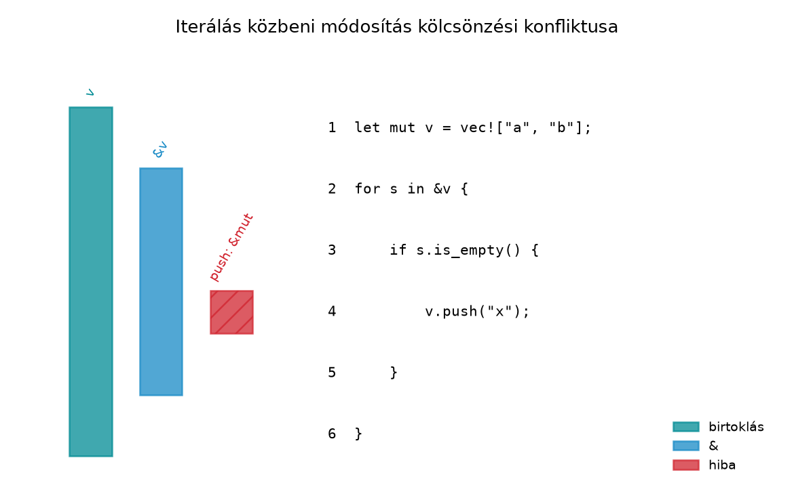

C++-ban a mutatók és referenciák aliasing-problémái gyakran csak
futás közben, nemdeterminisztikus hibaként jelentkeznek. Egy
std::vector elemének referenciáját megtartva a
push_back hívása reallokációt válthat ki, és a referencia
érvénytelenné válik; a program definiálatlan viselkedést (UB) mutat. A
Rust válasza erre a kölcsönzés-ellenőrző (borrow checker), amely már
fordítási időben elutasítja az ilyen mintát. A hibaüzenetek eleinte
frusztrálóak lehetnek, de ha megértjük, hogyan dönt a fordító, és
ismerjük a tipikus javítási mintákat, a hibák tanulságos iránytűvé
válnak.
Definíció. Non-lexical lifetime (NLL): a Rust 2018 edition óta a kölcsönzések élettartama nem a lexikális hatókör (blokk) végéig tart, hanem az adott referencia utolsó használatáig. A kölcsönzés-ellenőrző ezt az úgynevezett liveness-alapú elemzést használja, hogy pontosabban fogadjon el biztonságos kódokat.
Szabály (kölcsönzési szabály). Egy adott értékre
egyszerre vagy tetszőleges számú megosztott (&T)
referencia, vagy pontosan egy módosítható (&mut T)
referencia lehet. A konfliktust az NLL figyelembevételével ellenőrzi a
fordító: ha egy referencia már nem használt, nincs konfliktus.
Definíció. Two-phase borrows: bizonyos
metódushívásoknál a &mut kölcsönzés két fázisban
történik. Először a hívás argumentumainak kiértékelésekor a kölcsönzés
csak foglalt (reserved) állapotban van, és nem tiltja a
megosztott kölcsönzéseket ugyanabban a kifejezésben; a tényleges
aktiválás a hívás után történik. Ez teszi lehetővé például a
v.get_mut(i) mintát, ahol az i indexelés
& kölcsönzése nem ütközik a
&mut v-vel.
A fordítási hibák leggyakoribb hibakódjai:
E0499: cannot borrow x as mutable more
than once at a time (többszörös &mut)E0502: cannot borrow x as mutable because
it is also borrowed as immutable (& alatt
&mut)E0503: cannot borrow x as immutable
because it is also borrowed as mutable (&mut alatt
&)A pontos hibaüzenet verziófüggő, de a hibakódok stabilak.
C++-ban az aliasing hiba néma UB lehet:
#include <vector>
#include <string>
#include <iostream>
int main() {
std::vector<std::string> v = {"a", "b"};
const std::string& first = v[0];
v.push_back("c"); // reallokáció: first érvénytelen
std::cout << first << '\n'; // UB: dangling reference
}Rustban ugyanez a kísérlet fordítási hibát ad:
fn main() {
let mut v = vec!["a".to_string(), "b".to_string()];
let first = &v[0];
v.push("c".to_string()); // HIBA: first aktív
println!("{first}");
}A hiba lényege (E0502): a first megosztott kölcsönzése
aktív, mert a println!-ben használjuk, és a
v.push módosítható kölcsönzést igényel. A különbség: C++
UB-t ad, Rust fordítási hibát.
Tipikus hiba, amikor egy gyűjteményen iterálunk, és közben ugyanazt a gyűjteményt módosítani próbáljuk.
Ez a változat szándékosan nem fordul le:
fn main() {
let mut v = vec![String::from("a"), String::from("b")];
for s in &v {
if s.is_empty() {
v.push(String::from("x")); // HIBA: &v aktív
}
}
}A hiba lényege text blokkban:
error[E0502]: cannot borrow `v` as mutable because it is also borrowed as immutable
--> src/main.rs:5:13
|
4 | for s in &v {
| -- immutable borrow occurs here
5 | v.push(String::from("x"));
| ^^^^^^^^^^^^^^^^^^^ mutable borrow occurs here
6 | }
| - immutable borrow ends hereA for s in &v létrehoz egy megosztott kölcsönzést,
amely a ciklus teljes idejére aktív, mert a s-t a
ciklusmagban használjuk. A v.push viszont módosítható
kölcsönzést igényel ugyanarra a v-re — ez ütközés.
A legegyszerűbb javítás a ciklus iterátorának lecserélése indexre, így a megosztott kölcsönzés csak az aktuális elem eléréséig tart:
fn main() {
let mut v = vec![String::from("a"), String::from("b")];
for i in 0..v.len() {
if v[i].is_empty() {
v.push(String::from("x"));
}
}
println!("{v:?}");
}Itt a v[i] megosztott kölcsönzése az if
feltétel kiértékelése után azonnal véget ér, így a v.push
már nem ütközik. Fontos azonban, hogy az indexeléses megoldás nem mindig
ideális: ha a ciklus közben törölünk vagy beszúrunk, az indexek
elcsúszhatnak. Ilyenkor érdemes külön gyűjteni a műveleteket, vagy más
mintát választani.
Ha csak egy rövid részben van szükség a kölcsönzésre, zárjuk blokkba, hogy a kölcsönzés véget érjen:
fn main() {
let mut v = vec![String::from("a"), String::from("b")];
{
let first = &v[0];
println!("{first}");
} // first kölcsönzése véget ér
v.push(String::from("x"));
}Az NLL ismeretében azonban a blokk nem mindig szükséges: ha a
first-et nem használjuk a push után, a fenti
kód explicit blokk nélkül is lefordul, mert a kölcsönzés az utolsó
használatnál véget ér.
fn main() {
let mut v = vec![String::from("a"), String::from("b")];
let first = &v[0];
println!("{first}");
v.push(String::from("x"));
}Ez az NLL közvetlen előnye: a régi lexikális szabály szerint ez a kód hibás lett volna.
Ha egy struct mezőjét kell módosítani úgy, hogy közben a
self-re is szükség van, a std::mem::take
kicseréli a mezőt alapértelmezett értékre, és a régi érték tulajdonjogát
átadja. Így a módosítás idejére nem áll fenn kölcsönzés a
self-re.
Példa: egy Store struktúra HashMap mezővel,
és egy metódus, amely a megadott prefixű kulcsok értékeihez egy bájtot
fűz.
use std::collections::HashMap;
#[derive(Default)]
struct Store {
items: HashMap<String, Vec<u8>>,
}
impl Store {
fn append_to_prefix(&mut self, prefix: &str, byte: u8) {
let items = std::mem::take(&mut self.items);
for (key, mut value) in items {
if key.starts_with(prefix) {
value.push(byte);
}
self.items.insert(key, value);
}
}
}A std::mem::take átmenetileg kiüríti a
self.items mezőt (üres HashMap lesz), és a
régi map tulajdonjoga a lokális items változóba kerül. A
ciklusban már nem kölcsönözzük a self-et, így a
self.items.insert hívása gond nélkül lefordul.
Továbbvitt eredmény. Az itt összegyűjtött javítási mintákat a Élettartam-annotációk és az elision szabályai, a Vec, HashMap, BTreeMap és társaik; az Entry API és a Záróprojekt: az rkv teljes rendszerként alfejezetek használják fel.
Az alábbi katalógus a leggyakoribb borrow checker hibák feloldási mintáit foglalja össze. Mindegyik minta tudatos döntést igényel, nem a hibaüzenet „megkerülését” szolgálja.
Hatókör szűkítése. Ha a kölcsönzésre csak rövid ideig van szükség, blokkba zárjuk, vagy átrendezzük a kódot, hogy az utolsó használat hamarabb következzen be. Ez a legolcsóbb, nem változtat a típusokon.
Index használata. Iterátor helyett explicit indexciklust írunk. A kölcsönzés rövid, de a gyűjtemény módosítása esetén ügyelni kell az indexek érvényességére.
split_at_mut. Ha egy mutábilis szeleten vagy
tömbön két diszjunkt részre van szükségünk, a split_at_mut
két &mut szeletet ad, amelyek nem fedik egymást.
Példa:
let mut v = vec![1, 2, 3];
let (left, right) = v.split_at_mut(1);
left[0] += 10;
right[0] += 10;mem::take. Egy struct mezőjének
ideiglenes kicserélése alapértelmezett értékre. A mező tulajdonjoga
lokális változóba kerül, megszüntetve a self-re vonatkozó
kölcsönzést.
Klónozás tudatosan. Ha az adat kicsi, vagy a
másolat költsége elfogadható, clone-ot használunk. Ez nem a
borrow checker „legyőzése”, hanem explicit másolási döntés. Kerüljük a
reflexszerű clone-ozást, mert elrejti a tervezési
hibát.
Belső mutabilitás (Cell, RefCell). Futásidejű ellenőrzést végez, és lehetővé teszi a megosztott kölcsönzésen keresztüli módosítást. Csak akkor használjuk, ha a többi minta nem alkalmazható, mert a hiba futásidőbe kerül. Részletesen a Belső mutabilitás: Cell, RefCell és a futásidejű kölcsönzés alfejezet tárgyalja.
Az alábbi diagram az iterálás közbeni módosítás konfliktusát mutatja:
a &v megosztott kölcsönzés a ciklus teljes ideje alatt
aktív, ezért a v.push módosítható kölcsönzése hibát
okoz.

A diagram jól mutatja, hogy a v tulajdonos (owner)
élettartama a teljes blokk, a &v megosztott kölcsönzés
a for ciklus kezdetétől a ciklusmag végéig tart, a
v.push pedig ugyanabban a tartományban igényel módosítható
kölcsönzést — ez az átfedés okozza a hibát.
Munkakönyvtár: ~/rust-labor/rkv/
Ebben a laborban egy olyan frissítő metódust adunk az
rkv-core Store típusához, amely a megadott
prefixszel kezdődő kulcsok értékeihez egy bájtot fűz. A kezdeti, hibás
implementáció illusztrálja a tipikus borrow hibát.
Nyissuk meg a workspace-t, és hozzunk létre egy új integrációs
tesztfájlt rkv-core/tests/update_prefix.rs néven.
A tesztben definiáljunk egy egyszerű Store
struktúrát HashMap mezővel (a labor kedvéért a
HashMap-alapú megvalósítást használjuk):
use std::collections::HashMap;
#[derive(Default)]
struct Store {
items: HashMap<String, Vec<u8>>,
}
impl Store {
fn insert(&mut self, key: String, value: Vec<u8>) {
self.items.insert(key, value);
}
fn append_to_prefix(&mut self, prefix: &str, byte: u8) {
for (key, value) in &mut self.items {
if key.starts_with(prefix) {
value.push(byte);
}
}
}
}Ez a változat valójában lefordul, mert a
for (key, value) in &mut self.items csak a
self.items-re vesz fel módosítható kölcsönzést, és a
value.push ezen a kölcsönzésen keresztül történik. Nincs
konfliktus, mivel nem hívunk self-re más metódust a
ciklusban.
self.insert-et hív (ez a gyakori hiba, ha a fejlesztő
függvénybe szervezi a módosítást):impl Store {
fn append_to_prefix_bad(&mut self, prefix: &str, byte: u8) {
for (key, value) in &mut self.items {
if key.starts_with(prefix) {
value.push(byte);
// Képzeljük el, hogy itt egy további művelet is módosítja a map-et:
// self.items.insert(key.clone(), value); // HIBA
}
}
}
}Valójában a value.push nem ütközik, de ha hívnánk egy
&mut self-et igénylő metódust (pl.
self.items.insert), az ütközést okozna a
&mut self.items kölcsönzéssel. A labor célja a
std::mem::take minta bemutatása, ezért írjuk át a metódust
a mem::take-kel:
impl Store {
fn append_to_prefix_with_take(&mut self, prefix: &str, byte: u8) {
let items = std::mem::take(&mut self.items);
for (key, value) in items {
let mut new_value = value;
if key.starts_with(prefix) {
new_value.push(byte);
}
self.items.insert(key, new_value);
}
}
}#[test]
fn test_append_to_prefix() {
let mut store = Store::default();
store.insert("alma".into(), vec![1]);
store.insert("korte".into(), vec![2]);
store.append_to_prefix_with_take("al", 9);
assert_eq!(store.items.get("alma"), Some(&vec![1, 9]));
assert_eq!(store.items.get("korte"), Some(&vec![2]));
}cargo test --test update_prefixVárt kimenet: a teszt sikeresen lefut, a
test_append_to_prefix teszt zöld.
A mem::take minta lehetővé teszi, hogy a ciklus közben
szabadon módosítsuk a self.items-t, mert a
self kölcsönzése megszűnik a take után. Ez a
minta gyakran hasznos, ha egy mezőt darabonként kell áthelyezni vagy
átalakítani.
Kétszeri &mut ugyanarra az értékre.
Amikor egy változóra két módosítható referenciát próbálunk szerezni, a
fordító E0499 hibát ad. C++-ban ez gyakori (pl. két mutató ugyanarra az
objektumra), de Rustban tilos. A javítás: szűkítsük a kölcsönzések
hatókörét, vagy használjunk split_at_mut-ot, ha diszjunkt
részekről van szó.
Reflexszerű klónozás. A kezdő Rust-fejlesztők
gyakran clone-t hívnak minden borrow hibánál. Ez a kódot
lassítja és elrejti a tervezési problémát. Mindig kérdezzük meg: tényleg
szükség van a másolatra, vagy a kölcsönzés átrendezhető?
Rc<RefCell<T>> túlhasználat. A belső mutabilitás csábító megoldás, de elkerüli a fordítási idejű ellenőrzést, és futásidejű panikhez vezethet. Csak akkor használjuk, ha a statikus minták valóban nem alkalmazhatók.
Öröklés-szimuláció Deref-fel. A Deref
trait automatikus konverziót tesz lehetővé, de nem öröklés. Ha egy típus
Deref-et implementál, az félrevezető lehet, és nem
helyettesíti a trait-eket.
Zár tartása .await-en át. Aszinkron
kódban egy MutexGuard vagy más őr (guard) tartása
.await-en keresztül a Send határok
megsértéséhez vezethet. Ezt a Send és Sync és az
async alfejezetek tárgyalják.
Az alábbi kód lefordul-e? Indokold az NLL szabályai alapján.
fn main() {
let mut x = 10;
let r = &mut x;
*r += 1;
println!("{x}");
}Az alábbi C++ kód egy vektorban megkeresi az első üres stringet, majd
hozzáfűz egy új elemet. A referencia érvénytelenné válhat a
push_back miatt. Írd át biztonságos, idiomatikus
Rustra.
#include <vector>
#include <string>
#include <iostream>
int main() {
std::vector<std::string> v = {"a", "", "b"};
const std::string* first_empty = nullptr;
for (const auto& s : v) {
if (s.empty()) {
first_empty = &s;
break;
}
}
if (first_empty) {
v.push_back("x"); // first_empty érvénytelen lehet
std::cout << *first_empty << '\n'; // UB
}
}Valósítsd meg az rkv-core Store típusához a
következő metódust a mem::take minta használatával:
fn remove_keys_with_prefix(&mut self, prefix: &str) -> Vec<String> {
// Távolítsd el azokat a kulcsokat, amelyek a prefix-szel kezdődnek,
// és add vissza a törölt kulcsok listáját.
}A metódus nem használhat clone-t a key-n,
és a self.items-et módosítania kell.
A következő kód fordítási hibát ad. Javítsd a
split_at_mut minta használatával.
fn main() {
let mut data = [1, 2, 3, 4];
let left = &mut data[..2];
let right = &mut data[2..];
left[0] += 10;
right[0] += 20;
}Mi a hiba pontos oka, és hogyan oldja fel a
split_at_mut?
Igen, lefordul. Az NLL szabály szerint a r módosítható
kölcsönzésének élettartama az utolsó használatáig tart, ami a
*r += 1; sor vége. A println!("{x}") már nem
használja a r-t, így a kölcsönzés megszűnt, és a
x megosztott kölcsönzése a println!-ben
megengedett. Régi lexikális szabály szerint ez a kód hibás lett volna,
mert a r a blokk végéig élt.
Idiomatikus Rust megoldás: először keressük meg az indexet, majd módosítsunk. Az indexelés elkerüli a hosszú kölcsönzést.
fn main() {
let mut v = vec!["a".to_string(), String::new(), "b".to_string()];
let first_empty = v.iter().position(|s| s.is_empty());
if let Some(i) = first_empty {
v.push("x".to_string());
println!("{}", v[i]); // itt már biztonságos, mert nincs aktív kölcsönzés
}
}A position megosztott kölcsönzést használ, de az
eredmény index, nem referencia, így a vektor módosítása után is
érvényes.
impl Store {
fn remove_keys_with_prefix(&mut self, prefix: &str) -> Vec<String> {
let items = std::mem::take(&mut self.items);
let mut removed = Vec::new();
for (key, value) in items {
if key.starts_with(prefix) {
removed.push(key);
} else {
self.items.insert(key, value);
}
}
removed
}
}A mem::take után a self.items üres, így a
ciklusban a self.items.insert nem ütközik a
self kölcsönzésével. A törölt kulcsokat külön visszük
ki.
A hiba: a data[..2] és data[2..] szeletek
kölcsönzése két külön &mut referencia a
data-ra, ami E0499 hibát ad, mert a fordító nem tudja
statikusan bizonyítani, hogy a két tartomány diszjunkt. A
split_at_mut explicit deklarálja a felosztást:
fn main() {
let mut data = [1, 2, 3, 4];
let (left, right) = data.split_at_mut(2);
left[0] += 10;
right[0] += 20;
}A split_at_mut garantálja, hogy a két visszaadott
&mut szelet nem fedi egymást, mert a felosztási pontot
a hívó adja meg.
A borrow checker NLL (non-lexical lifetimes) kiterjesztése óta a
kölcsönzések az utolsó használatig tartanak, nem a blokk végéig. Ez
pontosabbá teszi a hibadetektálást, és elfogad olyan biztonságos
kódokat, amelyeket a régi lexikális szabály elutasított. A tipikus hibák
(E0499, E0502, E0503) mögött általában aliasing-konfliktus áll; a
javítási minták katalógusa: hatókör szűkítése, index használata,
split_at_mut, mem::take, tudatos klónozás és
végső esetben belső mutabilitás. A laborban az rkv-core
Store típusához adtunk mem::take-en alapuló
frissítő metódust (append_to_prefix_with_take), amely a
self.items ideiglenes kicserélésével megszünteti a
kölcsönzési konfliktust. Ezt a mintakatalógust a Élettartam-annotációk, a HashMap Entry API és a záróprojekt is használja.
A Rust reference NLL-re vonatkozó fejezete és a The Rust Programming
Language (Könyv) 4.2 és 10.3 alfejezetei a kiindulópontok. A
hibaüzenetek pontos szövege verziófüggő; a hibakódok stabilak. A
std::mem::take és a split_at_mut API-ja a
stabil Rust része, de a pontos szignatúrák ellenőrizhetők a docs.rs-en.
Ez a szöveg nem támaszkodik webes keresésre, a nyelvi szabályok a szerző
stabil ismeretein alapulnak.